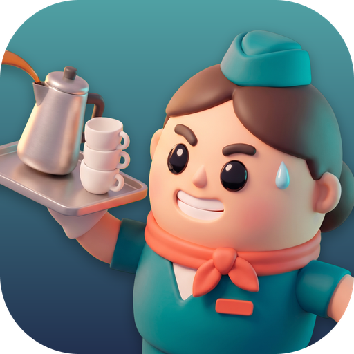

Turbulence: Cabin Chaos
A flight-attendant time-management game for iPhone and iPad. Need a hand? Start here.
Contact
Found a bug, stuck on a flight, or have an idea? Write to us and we'll get back to you, usually within a few days.
Email supportWhat's free and what's Full Game?
Route 1 (Regional Hops) and its six flights are free. Full Game is a one-time purchase that unlocks Route 2, Route 3 and every route added in later updates. There are no ads and nothing else to buy.
I bought Full Game but Route 2 is still locked
Route 2 opens once you've earned at least one star on every Route 1 flight. Its padlock on the map says "Finish Route 1" until then. Later routes open when you reach their star target, shown on their padlock.
Restoring your purchase
On a new device, or after reinstalling, open the unlock screen (tap a padlocked route) or Options, and tap Restore purchases. Sign in with the same Apple Account you bought with.
Full Game supports Family Sharing: family members in your Apple family group get it too.
My progress
Your crew members, stars and settings are saved on your device only. Deleting the app deletes your progress, and progress doesn't move between devices. Your Full Game purchase is kept by Apple, so you can always restore it.
Refunds
Purchases are handled by Apple. To ask for a refund, visit reportaproblem.apple.com.